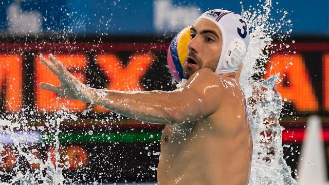

Onderzoek naar mogelijk bewuste nederlaag Franse waterpoloërs
De internationale zwembond FINA doet onderzoek naar het gedrag van de Franse waterpoloërs tijdens het duel met Canada tijdens het Olympisch Kwalificatietoernooi (OKT) van afgelopen week. Dat laat de FINA weten in een verklaring aan CBC News. "We onderzoeken deze zaak en onthouden ons verder van commentaar." De Franse waterpoloërs laadden vorige week de verdenking op zich dat ze niet hun best deden tijdens het met 13-5 verloren duel met Canada. Daardoor speelde Frankrijk in de knock-outfase niet tegen het sterk geachte Spanje, maar tegen Nederland om een olympisch ticket. De Fransen wonnen na strafworpen van Oranje, dat het toernooi in Triëst als vijfde beëindigde en eerste reserve is voor de Spelen in Rio de Janeiro. Canada ging onderuit tegen Spanje en ontbreekt op de Spelen. beschamend Volgens de Canadese speler Constantine Kudoba was het duidelijk dat Frankrijk aanstuurde op een nederlaag tegen zijn ploeg. "Het was de meest beschamende wedstrijd die ik ooit heb gespeeld. Ze probeerden niet eens te scoren."